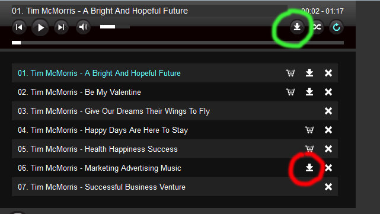

Installation
What is in the package?
You have 2 folders in the package (deploy and source). You only need deploy folder on your server. Source folder contains non minified javascript files and flash source code.
Please do not place non-minified javascript files on your server.
Deploy folder info:
php files:
dl.php (used for downloading files)
mail.php (used for ios download backup / sending emails because ios cannot download files)
folder_parser.php (used for reading directories with mp3 files)
includes/database.php, outside-web-root-settings.php (used for reading playlist from the database)
PIE.htc (used for IE8 and below backup shadow: http://css3pie.com/)
Source folder info:
flash files:
flash_audio (flash backup for browsers that do not support html5 audio)
flash_circle (flash circle backup, not audio, just the circle itself)
flash_youtube (flash backup for IE8 and below since youtube modern iframe embed API works only on IE9 and above)
How to install this in your website?
Every demo page is already a website, but it only contains my player, nothing more. So you should aim to reproduce the same layout from my demo pages in your webpage.
To start open demo page you want to use in any text editor (Dreamweaver is good if you have it, but any plain text editor will do).
There are 2 sections (one in head tag and one in body tag) that you need to copy.
In the head tag you have links to all the stylesheet and javascript files. In the body part are all the component elements.
Make sure you copy everything from both head and body tags into your web page at appropriate places.
Also take all folders from deploy folder (css, js, includes, xml ... etc) and place them on your website as well, keeping the same structure between files.
Be carefull when inserting various bits from my demo page into yours.
One of the most common errors is duplicating jquery script for example:
<script type="text/javascript" src="js/jquery-1.10.2.min.js"></script>
If your web page already includes link to jquery as shown above (regardless if you use different version), then DO NOT include it twice!
The same goes for other scripts as well, maybe for example, you already have jScrollPane in your webpage and you have included a script for that.
Editing jQuery file
If you need to edit the main jquery files (which hold javascript code for the component), you will see they come in 2 versions with the package: 'minified' and 'non-minified'.
What this basically means is that minified versions has some of the 'encryption' applied.
This is usefull in case someone takes your script from your website, making it almost useless for any kind of editing at least.
I suggest using minified versions on your website!
Ofcourse if you need to edit this file yourself, switch to non-minified version (from the source folder) and then when you finish editing you can minify the file yourself here:
http://closure-compiler.appspot.com/home
Its as simple as it gets, you just copy/paste content of the whole file in the left provided space, press 'COMPILE' and when its done copy/paste all content from the right window back to your file, overwritting all the content with the new one.
Minified files usually have .min extension in its name and non-minified dont!
It doesnt have to be that way, its just a common practice, but its important note in case your web paths get wrong.
How player works
Playlist can be either visible or hidden (this actually refers to the playlist items themselves).
When you load a new playlist using the loadPlaylist method, previous playlist gets destroyed automatically.
You can add tracks in the playlist with addTrack method and you can remove tracks from that playlist with removeTrack method.
Also, calling the addTrack method with no previous playlist loaded will create a new playlist with that track inside, so it would be just like calling loadPlaylist method with one track inside (or multiple ones).
So lets say you load a visible playlist in the player.
Now you can add tracks to it with addTrack method. And you keep adding visible tracks to it.
You can also remove tracks from it by using removeTrack method.
Now if at any point you load a hidden track, previous visible playlist will get destroyed and new hidden playlist will be created with that hidden track(s) you just added.
And now you can again add tracks and remove tracks from that playlist.
The point is visible and hidden playlist are not interchangable and you can only have one at a time.
You can also access playlist data using this API method:
/* returns array of objects for every song in current playlist: {id, type, mp3, ogg, length, title, thumb, download, dlink, plink} */
this.getPlaylistData = function(){
if(!componentInited) return false;
if(playlistTransitionOn) return false;
if(!lastPlaylist) return false;
return playlistDataArr;
}Every time new playlist is created, new track added/removed or playlist modified in any way, this array will be updated and you will be able to see your playlist content.
Visible playlist tracks get appended into playlist_inner element:
<div class="playlistHolder">
<div class="componentPlaylist">
<div class="playlist_inner">
<!-- playlist items are appended here! -->
</div>
</div>
<!-- preloader -->
<div class="preloader"></div>
</div>
Hidden tracks are appended in div which gets created on runtime but is not appended in the dom:
Code in jquery.html5audio.js:
var hidden_playlist_holder = $('<div/>');//hidden playlist
So when you load a playlist on start you specify this attribute (visible/hidden):
Code in javascript settings file:
/* activePlaylist: set active playlist that will be loaded on beginning.
param1: hidden (boolean) true/false (visible/hidden playlist)
param2: id (pass element 'id' from the dom)
Leave empty for no playlist loaded at start like this: activePlaylist: '' */
activePlaylist: {hidden: false, id: '#playlist1'},Or when you are load a playlist on runtime using loadPlaylist API you also specify this attribute (visible/hidden)
<li><a href='#' onClick="api_loadPlaylist(hap_players[0],{hidden: false, id: '#playlist1'}); return false;">Load local playlist 1</a></li>
<li><a href='#' onClick="api_loadPlaylist(hap_players[0],{hidden: true, id: '#playlist3'}); return false;">Load podcast playlist 1</a></li>
loadPlaylist method always accepts playlists in a form of 'html', I call it such because it looks like this:
<li class= 'playlistItem' data-type='podcast' data-path='http://gidilounge.fm/?feed=podcast'></li>
While addTrack method accepts tracks both in a form of 'html' and 'data' (objects), so it can be like this (html form):
var trackList_podcast = [
"<li class= 'playlistItem' data-type='podcast' data-path='http://gidilounge.fm/?feed=podcast'/>",
"<li class= 'playlistItem' data-type='podcast' data-path='http://www.kingola.com/feed/podcast/'/>"
];or like this (data (object) form):
var trackList2_podcast = [
{type: 'podcast', path: 'http://gidilounge.fm/?feed=podcast'},
{type: 'podcast', path: 'http://www.kingola.com/feed/podcast/' }
];You have many track examples in both html and data format located in jquery.html5audio.func.js.
If you are loading a playlist from XML , you can use only html format tracks:
var trackList_podcast = [
"<li class= 'playlistItem' data-type='podcast' data-path='http://gidilounge.fm/?feed=podcast'/>",
"<li class= 'playlistItem' data-type='podcast' data-path='http://www.kingola.com/feed/podcast/'/>"
];You have XML playlist examples in xml folder.
If you are loading a playlist from the DATABASE , you can use both html and data form:
var trackList_database = [
"<li class= 'playlistItem' data-type='database_data' data-path='ap_hap' data-table='sound'/>"
];var trackList2_database = [
{type: 'database_data', path: 'ap_hap', table: 'sound'}
];You have database playlist examples in help folder (one is in html, other in data format).
Dont get confused with database loading:
Here we add track in html format:
<li><a href='#' onClick="api_addTrack(hap_players[0], 'visible', 'html', trackList_database[0], 0); return false;">Add db1 html track 0, position 0</a></li>
but tracks in database are in data format (data-type='database_data')!
var trackList_database = [
"<li class= 'playlistItem' data-type='database_data' data-path='ap_hap' data-table='sound'/>"
];Here we add track in html format as well:
<li><a href='#' onClick="api_addTrack(hap_players[0], 'visible', 'html', trackList_database[0], 0); return false;">Add db1 html track 0, position 0</a></li>
and tracks in database are in html format (data-type='database_html')!
var trackList_database = [
"<li class= 'playlistItem' data-type='database_html' data-path='ap_hap' data-table='sound1'/>"
];Here we add track in data format:
<li><a href='#' onClick="api_addTrack(hap_players[0], 'visible', 'data', trackList2_database[0], 0); return false;">Add db1 html track 0, position 0</a></li>
but tracks in database are in html format (data-type='database_html')!
var trackList2_database = [
{type: 'database_html', path: 'ap_hap', table: 'sound1'}
];Here we add track in data format as well:
<li><a href='#' onClick="api_addTrack(hap_players[0], 'visible', 'data', trackList2_database[0], 0); return false;">Add db1 html track 0, position 0</a></li>
and tracks in database are in data format (data-type='database_data').
var trackList2_database = [
{type: 'database_data', path: 'ap_hap', table: 'sound'}
];File structure
Every demo page contains links to css and javascript files in the head tag:
<link rel="stylesheet" type="text/css" href="css/jquery.jscrollpane.css" media="all" /><!-- scroll in playlist -->
<link rel="stylesheet" type="text/css" href="css/html5audio_default.css" />
<link rel="stylesheet" type="text/css" href="css/html5audio_playlist_selector.css" />
<script type="text/javascript" src="js/swfobject.js"></script><!-- flash backup -->
<script type="text/javascript" src="js/jquery-1.10.2.min.js"></script>
<script type="text/javascript" src="js/jquery-ui-1.10.3.custom.min.js"></script><!-- jquery ui sortable/draggable -->
<script type="text/javascript" src="js/jquery.ui.touch-punch.min.js"></script><!-- mobile drag/sort -->
<!--[if lte IE 9 ]><script type="text/javascript" src="js/jquery.XDomainRequest.js"/><![endif]--><!-- ofm ie9 and below fix -->
<script type="text/javascript" src="js/jquery.mousewheel.min.js"></script><!-- scroll in playlist -->
<script type="text/javascript" src="js/jquery.jscrollpane.min.js"></script><!-- scroll in playlist -->
<script type="text/javascript" src="js/jquery.html5audio.min.js"></script>
<script type="text/javascript" src="js/jquery.html5audio.func.js"></script>
<script type="text/javascript" src="js/jquery.html5audio.settings_playlist_selector.js"></script>Its commented so it should be clear what belongs to what.
The bare minimum is this:
<link rel="stylesheet" type="text/css" href="css/html5audio_default.css" />
<link rel="stylesheet" type="text/css" href="css/html5audio_playlist_selector.css" />
<script type="text/javascript" src="js/swfobject.js"></script><!-- flash backup -->
<script type="text/javascript" src="js/jquery-1.10.2.min.js"></script>
<script type="text/javascript" src="js/jquery.html5audio.min.js"></script>
<script type="text/javascript" src="js/jquery.html5audio.func.js"></script>
<script type="text/javascript" src="js/jquery.html5audio.settings_playlist_selector.js"></script>As an example, I have removed jScrollPane references, Youtube references, backup javascript for Official.fm music, Text Scroller (which scrolls song name if used), jQuery UI which was used for dragging and sorting playlist items.
jquery.html5audio.js is a main jquery file for the component, and jquery.apPlaylistManager.js, these two things are necessary!
Also, jquery.html5audio.func.js contains lots of assets like API, callbacks, track examples, popup code, some default variables and some of the flash functions which are needed if flash is being used (for both flash audio on the browsers than do not support html5 audio and for youtube backup on IE8 and below).
Each settings file, in this example jquery.html5audio.settings_playlist_selector.js contains player settings, and part of the code which initializes component and creates flash movies if necessary.
Of course you can combine all these into single file as it suits your needs.
For the body tag, the bare minimum is this:
<div id="componentWrapper"></div>So we need an element on which component is going to be initialized:
var hap_player1, hap_players = [hap_player1];
jQuery(document).ready(function($) {
jsReady = true;
//init component
hap_players[0] = $('#componentWrapper').html5audio(hap_settings);
});All other player elements are optional.
Check How player works chapter in help on little bit more info on playlist creation.
If you are going to use visible playlist you will need this element because visible playlist tracks get appended into it:
<div class="playlistHolder">
<div class="componentPlaylist">
<div class="playlist_inner">
<!-- playlist items are appended here! -->
</div>
</div>
<!-- preloader -->
<div class="preloader"></div>
</div>
If you are going to use hidden playlist than you dont need any other elements.
Once component is ready (check callbacks in jquery.html5audio.func.js), you can loadPlaylist, addTracks, removeTracks etc...
The bare minimum to play music, is to use inputAudio API method, check API methods on the bottom of jquery.html5audio.js file.
inputAudio API method does not create any kind of playlist tracks, or any kind of playlist data, it just plays current song that we passed to the player.
If we already have (visible or hidden) playlist loaded and then we use inputAudio API method, this will not destroy current playlist, it will just play this audio, we can always return to our playlist, so inputAudio API method doesnt really affect our 'main' playlist data.
Using mp3/ogg audio playback
You can load audio files from your server or another servers as well.
Playlist with mp3/ogg tracks looks like this:
<ul id='playlist1'>
<li class= 'playlistItem' data-type='local' data-mp3='../media/audio/1/Tim_McMorris_-_A_Bright_And_Hopeful_Future.mp3' data-ogg='../media/audio/1/Tim_McMorris_-_A_Bright_And_Hopeful_Future.ogg' data-download><a class='playlistNonSelected' href='#'>Tim McMorris - A Bright And Hopeful Future</a><a class='dlink' href='#' data-dlink='../media/audio/1/Tim_McMorris_-_A_Bright_And_Hopeful_Future.mp3'><img src='media/data/dlink.png' alt = ''/></a><a class='plink' href='http://codecanyon.net/user/Tean/portfolio' target='_blank'><img src='media/data/url.png' alt = 'purchase'/></a></li>
<li class= 'playlistItem' data-type='local' data-mp3='../media/audio/1/Tim_McMorris_-_Give_Our_Dreams_Their_Wings_To_Fly.mp3' data-ogg='../media/audio/1/Tim_McMorris_-_Give_Our_Dreams_Their_Wings_To_Fly.ogg'><a class='playlistNonSelected' href='#'>Tim McMorris - Give Our Dreams Their Wings To Fly</a></li>
</ul>As you can see, every track has link to mp3 file and ogg version of the sound file as well.
To use html5 audio, you need to encode your audio files in 2 different formats (mp3 and ogg) to cover every browser since some browsers reqire 'mp3', while others 'ogg' to play audio.
This is the current requirement of html5 audio:
http://www.w3schools.com/html/html5_audio.asp
Alternativelly, you can set the player to use just mp3 format:
In every settings javascript file, you will see this option:
/* useOnlyMp3Format: true/false (set to true, and on browsers than do not support mp3, flash will be used to play mp3. Also set to true if you plan on using podcast, soundcloud, youtube, ofm) */
useOnlyMp3Format: true,If audio doesnt play on your server in some browsers and get an errors in browser console similar to these:
HTTP "Content-Type" of "application/octet-stream" is not supported. Load of media resource ... failed.
HTTP "Content-Type" of "audio/mpeg" is not supported. Load of media resource ... failed..
This is telling you that its a mime type problem.
Basically, what you need to do is add these lines in your .htaccess file on your server and audio will work for all browsers:
AddType audio/aac .aac
AddType audio/mp4 .mp4 .m4a
AddType audio/mpeg .mp1 .mp2 .mp3 .mpg .mpeg
AddType audio/ogg .oga .ogg
AddType audio/wav .wav
AddType audio/webm .webm
Reading files from folder
Playlist auto-generated from the folder looks like this:
<ul id='playlist12'>
<li class= "playlistItem" data-type='folder' data-path='../media/audio/1/'/>
</ul>
Or multiple folders for example:
<ul id='playlist12'>
<li class= "playlistItem" data-type='folder' data-path='../media/audio/1/'/>
<li class= "playlistItem" data-type='folder' data-path='../media/audio/2/'/>
</ul>
Also, any subdirectories within these folder(s) will automatically be read as well. This is the default option. To set otherwise add this attribute:
<ul id='playlist12'>
<li class= "playlistItem" data-type='folder' data-path='../media/audio/1/' data-subdirs='false'/>
</ul>
IMPORTANT - NAMING YOUR FILES!
When using this method to create your playlists you have to name your files properly!
Code will search for files with 'mp3' extension in the folder.
Both 'mp3' and 'ogg' pair need to be named exactly the same!, and dont use spaces in names (just like normal naming convention on the web):
Example of proper naming:
Tim_McMorris_-_Be_My_Valentine.mp3
Tim_McMorris_-_Be_My_Valentine.ogg
Failing even in just one letter will cause an error because my script cant guess that some 'ogg' audio file, for example, is the equivalent pair of some mp3 audio file, because they have different name. Could just be a different song.
Here I used underscores to separate file names and then in my code, then I remove these underscores when creating titles for the playlist (which in case of 'folder playlist' are automatically generated from the file name).
Also, in some demo examples (like index_basic.html) thumbnails are used in playlist items. When playlist is created from folder, code will automatically assume thumbnail with the same name and 'jpg' extension exist in the same location as the mp3 file, so you actually should have this for every song in the playlist (if thumbnails are being used):
Tim_McMorris_-_Be_My_Valentine.mp3
Tim_McMorris_-_Be_My_Valentine.ogg
Tim_McMorris_-_Be_My_Valentine.jpg
When auto creating playlist from folder of mp3 files, php is used (folder_parser.php), and because of that you need to run this either online or on local server like xampp!
Code in jquery.html5audio.js:
}else if(data_type == 'folder'){
_currentInsert=_item.data('toremove','true');
var url = 'folder_parser.php', sub_dirs = true;
if(_item.attr('data-subdirs') != undefined && _item.attr('data-subdirs') == 'false'){
sub_dirs = false;
}
var data = {"dir": data_path, "sub_dirs": sub_dirs};
$.ajax({
type: 'GET',
url: url,
data: data,
dataType: "json"
}).done(function(media) {
//console.log(media);
//console.log(media.length, media[0], media[1]);
var i = 0, len = media.length, entry, obj, title;
//console.log(len);
for(i; i < len; i++){
entry = media[i];
//console.log(entry);
path = entry.path;
if(path.indexOf('\\')){//replace backward slashes
path = path.replace(/\\/g,"/");
}
//console.log(path);
obj={};
obj.type = 'folder';
if(path.indexOf('.mp3')){
obj.mp3 = path;
}
obj.ogg = path.substr(0, path.lastIndexOf('.')) + '.ogg';//asssume ogg file exist with the same name!
obj.thumb = path.substr(0, path.lastIndexOf('.')) + '.jpg';//asssume thumb file exist with the same name!
//console.log(obj.mp3, obj.ogg);
//get title without extension
no_ext = path.substr(0, path.lastIndexOf('.'));
if (/\//i.test(no_ext)) {
title = no_ext.substr(no_ext.lastIndexOf('/')+1);
}else{
title = no_ext;
}
//remove underscores from title
title = title.split("_").join(" ");
//console.log('title = ', title);
obj.title = title;
if(_plink)obj.plink = _plink;
if(_dlink)obj.dlink = _dlink;
if(_download)obj.download = _download;
if(default_artwork)obj.thumb = default_artwork;
processPlaylistDataArr.push(obj);
}
createNodes();
}).fail(function(jqXHR, textStatus, errorThrown) {
//alert('Folder process error: ' + jqXHR.responseText);
if(useAlertMessaging) alert("Read folder error! Make sure you run this online or on local server!");
if(useAlertMessaging) alert('Playlist process failed, folder: ' + data_path);
if(_currentInsert && _currentInsert.data('toremove')=='true')_currentInsert.remove();
processPlaylistArr.shift();
checkPlaylistProcess();
});
}Using SoundCloud
To use SoundCloud do this:
1.
Register you SoundCloud api key here for free:
http://soundcloud.com/you/apps/new
And enter the Client ID into in javascript settings file:
/* soundcloudApiKey: If you want to use SoundCloud music, register you own api key here for free:
'http://soundcloud.com/you/apps/new' and enter Client ID */
soundcloudApiKey: '',2.
SoundCloud and Podcasts come only in 'mp3' format (no 'ogg').
So if you want to use them, you will need to set player to use only mp3 format (this means that player will use flash to play mp3 on the browser that does not support ogg audio format, like firefox and opera in the moment of speaking).
In every settings javascript file, you will see this option:
/* useOnlyMp3Format: true/false (set to true, and on browsers than do not support mp3, flash will be used to play mp3. Also set to true if you plan on using podcast, soundcloud, youtube, ofm) */
useOnlyMp3Format: true,3.
SoundCloud examples look like this:
<!-- Soundcloud playlists -->
<!-- track set -->
<ul id='playlist8'>
<li class= "playlistItem" data-type='soundcloud' data-path='http://soundcloud.com/trance/sets/magix-revolta-2/'/>
</ul>
<!-- user tracks -->
<ul id='playlist9'>
<li class= "playlistItem" data-type='soundcloud' data-path='http://soundcloud.com/computer-magic'/>
</ul>
<!-- single track -->
<ul id='playlist10'>
<li class= "playlistItem" data-type='soundcloud' data-path='http://soundcloud.com/trance/trance-single-138-bpm-anvil'/>
</ul>
<!-- user favorites -->
<ul id='playlist11'>
<li class= "playlistItem" data-type='soundcloud' data-path='http://soundcloud.com/mixessss/favorites'/>
</ul>
<!-- groups -->
<ul id='playlist12'>
<li class= 'playlistItem' data-type='soundcloud' data-path='https://soundcloud.com/groups/electronic-freakshow-efs-members-friends'></li>
</ul>Supported are track set, user tracks, single track, user favorites, soundcloud groups.
Using Podcasts
1.
Podcasts examples look like this:
<!-- podcast playlists -->
<ul id='playlist3'>
<li class= "playlistItem" data-type='podcast' data-path='http://gidilounge.fm/?feed=podcast'/>
</ul>
<ul id='playlist4'>
<li class= "playlistItem" data-type='podcast' data-path='http://www.kingola.com/feed/podcast/'/>
</ul>
<ul id='playlist5'>
<li class= "playlistItem" data-type='podcast' data-path='http://www.npr.org/rss/podcast.php?id=510008'/>
</ul>
<ul id='playlist6'>
<li class= "playlistItem" data-type='podcast' data-path='http://feeds.feedburner.com/xpnmusicnotes/'/>
</ul>
<ul id='playlist7'>
<li class= "playlistItem" data-type='podcast' data-path='http://robertkelly.libsyn.com/rss'/>
</ul>Player is able to process the type of podcasts that come in the same rss/xml format as the examples shown above (look at the page source at any of the podcasts url examples above).
The point is that my code in jquery.html5audio.js gets the mp3 url and title attributtes which my player needs.
}else if(data_type == 'podcast') {
_currentInsert=_item.data('toremove','true');
//https://groups.google.com/forum/#!topic/google-ajax-search-api/hJG3qJpQOpY
//https://developers.google.com/feed/v1/devguide
//http://stackoverflow.com/questions/5971177/google-feed-api-and-grabbing-tags-and-attributes
//http://stackoverflow.com/questions/11139065/google-feed-loader-api-ignoring-xml-attributes
var url = 'http://ajax.googleapis.com/ajax/services/feed/load?v=1.0&output=xml&num='+podcast_result_limit+'&callback=?&q='+ encodeURIComponent(data_path);
//console.log(url);
$.ajax({
type: 'GET',
url: url,
dataType: 'jsonp',
cache: false
}).done(function( result ) {
//console.log(result);
//console.log(result.responseData.xmlString);
if(result.responseData == null){
if(useAlertMessaging) alert('Playlist process failed, podcast: ' + data_path);
if(_currentInsert && _currentInsert.data('toremove')=='true')_currentInsert.remove();
processPlaylistArr.shift();
checkPlaylistProcess();
return;
}
if(!ieBelow9){
feedParser.html(result.responseData.xmlString);//store in case of large amount of data
var tempArr = feedParser.get(0).getElementsByTagName('item');
var i = 0, len = tempArr.length, entry, dur, obj, thumb;
for(i; i < len; i++){
entry = tempArr[i];
obj={};
obj.type = 'podcast';
obj.mp3 = entry.getElementsByTagName('enclosure')[0].getAttribute('url');
obj.ogg='';//dummy path
//console.log(entry.getElementsByTagName('itunes:duration')[0]);
if(entry.getElementsByTagName('itunes:duration')[0] != undefined){//fix for ios!
dur = hmsToSecondsOnly(entry.getElementsByTagName('itunes:duration')[0].childNodes[0].nodeValue);
obj.length = parseInt((dur*1000),10);//we want miliseconds
//console.log(typeof(obj.length), obj.length);
}
//thumb
if(entry.getElementsByTagName('media:thumbnail')[0] != undefined){
if(entry.getElementsByTagName('media:thumbnail')[0].getAttribute('url') != undefined){
obj.thumb = entry.getElementsByTagName('media:thumbnail')[0].getAttribute('url');
}else if(default_artwork){
obj.thumb = default_artwork;
}
}else if(default_artwork){
obj.thumb = default_artwork;
}
obj.title = entry.getElementsByTagName('title')[0].childNodes[0].nodeValue;
if(_plink)obj.plink = _plink;
if(_dlink)obj.dlink = _dlink;
if(_download)obj.download = _download;
//console.log(obj.url ,obj.title);
processPlaylistDataArr.push(obj);
}
}else{
var dom = parseXML(result.responseData.xmlString), _item, obj;
$(dom).find("item").each(function(){
_item=$(this);
//console.log(_item.find('enclosure').attr('url'));
//console.log(_item.find('title').text());
obj={};
obj.type = 'podcast';
obj.mp3 = _item.find('enclosure').attr('url');
obj.ogg='';//dummy path
obj.title = _item.find('title').text();
//thumb
//console.log(_item.find('media\\:thumbnail').attr('url'));
if(_item.find('media\\:thumbnail').length>0){
if(_item.find('media\\:thumbnail').attr('url')){
obj.thumb = _item.find('media\\:thumbnail').attr('url');
}else if(default_artwork){
obj.thumb = default_artwork;
}
}else if(default_artwork){
obj.thumb = default_artwork;
}
if(_plink)obj.plink = _plink;
if(_dlink)obj.dlink = _dlink;
if(_download)obj.download = _download;
processPlaylistDataArr.push(obj);
});
}
createNodes();
}).fail(function(jqXHR, textStatus, errorThrown) {
if(useAlertMessaging) alert('Parse feed error: ' + jqXHR.responseText);
if(useAlertMessaging) alert('Playlist process failed, podcast: ' + data_path);
if(_currentInsert && _currentInsert.data('toremove')=='true')_currentInsert.remove();
processPlaylistArr.shift();
checkPlaylistProcess();
});
}2.
SoundCloud and Podcasts come only in 'mp3' format (no 'ogg').
So if you want to use them, you will need to set player to use only mp3 format (this means that player will use flash to play mp3 on the browser that does not support ogg audio format, like firefox and opera in the moment of speaking).
In every settings javascript file, you will see this option:
/* useOnlyMp3Format: true/false (set to true, and on browsers than do not support mp3, flash will be used to play mp3. Also set to true if you plan on using podcast, soundcloud, youtube, ofm) */
useOnlyMp3Format: true,Using Youtube
Youtube examples look like this:
<!-- youtube singles -->
<ul id='playlist17'>
<li class='playlistItem' data-type='youtube_single' data-path='opL4oe62XL8' data-plink="http://www.google.com"></li>
<li class='playlistItem' data-type='youtube_single' data-path='Akb7SJgGx1A' ></li>
<li class='playlistItem' data-type='youtube_single' data-path='uPOUgobWTT0' ></li>
</ul>
<ul id='playlist17'>
<li class='playlistItem' data-type='youtube_single_list' data-path='opL4oe62XL8,Akb7SJgGx1A,uPOUgobWTT0' data-plink="http://www.google.com"></li>
</ul>
<!-- youtube playlist -->
<ul id='playlist18'>
<li class= 'playlistItem' data-type='youtube_playlist' data-path='PLE0311B1CFA360F55'></li>
</ul>Supported are youtube single video and youtube playlist.
Make sure you test online or on local server because some youtube videos do not play offline and you get a message like:
"This video contains content from .... It is restricted from playback on certain sites."
Youtube on mobile
Youtube will not autoplay on mobile phones: https://developers.google.com/youtube/iframe_api_reference#Mobile_considerations
You can test this by running example youtube_autoplay.html from audio_test folder.
It doesnt want to autoplay with their API, example youtube_autoplay_with_api.html from audio_test folder.
It doesnt even want to autoplay if you use your own button with their API, example youtube_autoplay_with_api_button.html from audio_test folder.
This means you have to press play on youtube red play buton which appears on the beginning of the video.
So if you use youtube with this player to start playing youtube (only the first time) you will have to press play manually.
The other problem wiht mobile IOS is that youtube multiple instances will not start playing. This works on android but not on IOS.
You can test this by running example youtube_multiple_instances.html from audio_test folder.
So in demo examples like index_wrap_multi2.html or index_full2.html where multiple youtube instances can appear (if youtube is used) will simply not work on IOS as it is currently.
Using Official FM
http://official.fm/
Official fm examples look like this:
<!-- ofm single tracks -->
<ul id='playlist19'>
<li class= 'playlistItem' data-type='ofm_single' data-path='D4lw' data-download data-dlink></li>
<li class= 'playlistItem' data-type='ofm_single' data-path='B1pl' data-dlink data-plink="http://www.google.com"></li>
<li class= 'playlistItem' data-type='ofm_single' data-path='GGXE'></li>
</ul>
<!-- ofm playlist tracks -->
<ul id='playlist20'>
<li class= 'playlistItem' data-type='ofm_playlist' data-path='1rp7' data-plink='http://codecanyon.net/user/Tean/portfolio'></li>
</ul>
<!-- ofm project tracks -->
<ul id='playlist21'>
<li class= 'playlistItem' data-type='ofm_project' data-path='edB6'></li>
</ul>Supported are single tracks, playlist tracks, project tracks.
Their documentation is mentioning rate limiting:
https://github.com/officialfm/api/blob/master/README.md
https://github.com/officialfm/api/blob/master/sections/rate_limiting.md
I have never reached the limit myself but in case you need it.
Mixing playlists
You can mix together multiple playlist of different type into a single playlist.
Couple of examples:
<ul id='playlist5m'>
<li class= 'playlistItem' data-type='local' data-mp3='../media/audio/1/Tim_McMorris_-_A_Bright_And_Hopeful_Future.mp3' data-ogg='../media/audio/1/Tim_McMorris_-_A_Bright_And_Hopeful_Future.ogg' data-dlink data-thumb='../media/audio/1/_A_Bright_And_Hopeful_Future.jpg'><a class='playlistNonSelected' href='#'>Tim McMorris - A Bright And Hopeful Future</a></li>
<li class= 'playlistItem' data-type='podcast' data-path='http://robertkelly.libsyn.com/rss' data-dlink data-thumb='media/default_artwork/podcast/01.jpg'><a class='plink' href='http://codecanyon.net/user/Tean/portfolio' target='_blank'><img src='media/data/url.png' alt = 'purchase'/></a></li>
<li class= 'playlistItem' data-type='soundcloud' data-path='http://soundcloud.com/computer-magic' data-dlink data-thumb='media/default_artwork/soundcloud/01.jpg'/>
<li class= 'playlistItem' data-type='ofm_single' data-path='GGXE' data-thumb='media/default_artwork/ofm_single/01.jpg'></li>
<li class= 'playlistItem' data-type='ofm_playlist' data-dlink data-path='1rp7' data-thumb='media/default_artwork/ofm_playlist/01.jpg'></li>
<li class= 'playlistItem' data-type='ofm_project' data-dlink data-path='edB6' data-plink='http://codecanyon.net/user/Tean/portfolio' data-thumb='media/default_artwork/ofm_project/01.jpg'></li>
<li class= 'playlistItem' data-type='youtube_single' data-path='opL4oe62XL8' data-plink='http://www.google.com' data-thumb='media/default_artwork/yt_single/01.jpg'></li>
<li class= 'playlistItem' data-type='youtube_playlist' data-path='PLE0311B1CFA360F55' data-thumb='media/default_artwork/yt_playlist/01.jpg'></li>
<li class= 'playlistItem' data-type='xml' data-path='xml/playlist2.xml'/>
<li class= 'playlistItem' data-type='folder' data-path='../media/audio/1/' data-thumb='media/default_artwork/folder1/01.jpg'/>
</ul>
<ul id='playlist6m'>
<li class= 'playlistItem' data-type='soundcloud' data-path='http://soundcloud.com/an21/favorites' data-dlink data-thumb='media/default_artwork/soundcloud/01.jpg' data-plink='http://codecanyon.net/user/Tean/portfolio'/>
<li class= 'playlistItem' data-type='ofm_playlist' data-path='1rp7' data-thumb='media/default_artwork/ofm_playlist/01.jpg'></li>
<li class= 'playlistItem' data-type='ofm_project' data-path='edB6' data-thumb='media/default_artwork/ofm_project/01.jpg' data-dlink></li>
</ul>
<ul id='playlist4m'>
<li class= "playlistItem" data-type='folder' data-path='../media/audio/1/'/>
<li class= "playlistItem" data-type='folder' data-path='../media/audio/2/'/>
</ul>Using examples with popup
Uninterupted music playback across webpage
There are a couple of method to achieve uninterupted music playback across webpage, here is a good read about it:
https://groups.google.com/forum/#!msg/jplayer/Fa1NI2XUeh4/_4vlrbwZ2x4J
There are examples which have ability to open the player in a new window and have uninterupted music playback (since player is sitting in a completely new isolated window from enything else).
Demo examples which have popup implemented are index_classic_popup.html and index_popup.html, but basically any example can have this feature.
You need to test examples with popup online or on local server because of browser security!
It will work offline in some browsers but not in others.
Popup code is located in jquery.html5audio.func.js:
/* START POPUP RELATED CODE */
function notify_popup(){//called from popup window when popup window has opened!
//console.log('notify_popup');
if(hap_popup && hap_popup.initPopup != undefined){//dont do anything if we are not going to be able to open popup!
if(hap_settings.autoUpdateWindowData)updatePlayerData();
if(hap_players && hap_players[0]){
if(hap_players[0].destroyPlaylist != undefined)hap_players[0].destroyPlaylist();
}
$('#componentWrapper').css('display','none');//hide player in parent page (we cant clear html because we dont dynamically append componentWrapper html with jquery! Only if we save the player html prior to this action so we can reinstantiate it later.)
try {
hap_popup.initPopup(hap_settings);
$('#popup_open').css('display','none');
}catch(e){
alert('parent notify_popup error: ' + e.message);
return false;
}
}
}
...To make some other demo in a popup, here are the differences (looking at example index_popup.html):
1. in index_popup.html there is a button which launches popup window:
<!-- POPUP LAUNCHER -->
<a id='popup_open' href="#"><img src='media/data/icons/set1/popup_open.png' alt = 'popup_open'/></a>2. Also the css for the button (html5audio_popup.css):
#popup_open{
position:relative;
float:left;
clear:both;
margin:10px;
display:none;
}3. Every popup demo has its counterpart popup page, in this case index_popup.html is linked to open popup.html, while index_classic_popup.html is linked to popup2.html
Make sure you copy content of that page (popup.html) and edit properly if some of the settings have changed depending on which demo example you use.
Using examples with circle seekbar
Demo examples index_circle.html and index_circle_multiple.html use circular seekbar which uses canvas in html5 capable browsers to draw the seekbar itself.
This of course means there is a flash backup for browsers that do no support canvas.
The important things here are:
1. How the circle is constructed:
Relevant html code from index_circle_multiple.html:
<div id="componentWrapper" class="hap_circle">
<div class="circlePlayer" data-strokeSize="26" data-tolerance="10" data-offOpacity="1" data-onOpacity="1">
<div class="player_progress_tooltip"><p></p></div>
<!-- html5 circle -->
<canvas class="play_canvas" width="160" height="160" data-bgcolor='#ffffff'></canvas>
<canvas class="load_canvas" width="160" height="160" data-bgcolor='#66ccff'></canvas>
</div>
<div class="playlistHolder">
<div class="componentPlaylist">
<div class="playlist_inner">
<!-- playlist items are appended here! -->
</div>
</div>
</div>
</div>class="hap_circle" is what distinguishes this player as 'circle' one.
As you can see there are some settings as well:
data-strokeSize - size of the seekbar/loadbar
data-tolerance - this is space between a circle itself and the inner pause/play button, so that seeking inadvertently doesnt trigger pause/play and vice/versa (this number can be 0 and above, but not so high that it affects pause/play button area).
data-offOpacity - opacity of circle when mouse is outside circle area
data-onOpacity - opacity of circle when mouse is over circle area
data-bgcolor on both play_canvas and load_canvas - color of seekbar/loadbar
canvas width and height attributes which need to be set in here, NOT in css! - width and height of the circle
Relevant code in jquery.html5audio.js:
if(hap_circle){
var load_canvas = componentWrapper.find('.load_canvas').css('cursor','pointer');
var play_canvas = componentWrapper.find('.play_canvas');
var circlePlayer = componentWrapper.find('.circlePlayer');
var offOpacity = parseFloat(circlePlayer.attr('data-offOpacity'),10);
var onOpacity = parseFloat(circlePlayer.attr('data-onOpacity'),10);
if(isMobile)offOpacity=onOpacity=1;
//needed to pass to flash
var circle_settings = {flash_id: settings.flash_id,
strokeSize:parseInt(circlePlayer.attr('data-strokeSize'),10),
play_color:play_canvas.attr('data-bgcolor'),
load_color:load_canvas.attr('data-bgcolor'),
tolerance:parseInt(circlePlayer.attr('data-tolerance'),10),
offOpacity: offOpacity,
onOpacity:onOpacity,
circleWidth:load_canvas.width(),
circleHeight:load_canvas.height()};
if(canvasSupport){
var strokeSize = circle_settings.strokeSize;//seekbar size
var play_color = circle_settings.play_color, load_color = circle_settings.load_color;//loading bar color, playbar color
var ctx = load_canvas[0].getContext('2d');
var ctx2 = play_canvas[0].getContext('2d');
var circ = Math.PI * 2;
var quart = Math.PI / 2;
var circleWidth = circle_settings.circleWidth; //canvas width and height needs to be the same!
var circleHeight = circle_settings.circleHeight;
var circleRadius = circleWidth/2;///same as circleHeight/2;
var playBtnRadius = circleRadius - strokeSize;
var tolerance = settings.tolerance;//space between seekbar and toggle button in which we will not register click! (so it makes it easier to seek/toggle without accidentally touching one or another. Value must be 0 or above, but below playBtnRadius on which we want to click)
var toggleValue;//value from center point to detect click on toggle (used for tolerance var)
var _isCircleSeek = false;//seek vs toggle
var last_circle_percentage = 0;
load_canvas.bind(_downEvent,function(e){
if(isCircleToggle(e)){
_isCircleSeek = false;
}else{
_isCircleSeek = true;
}
//console.log(_isCircleSeek);
_onDragStartSeek(e);
return false;
});
var player_progress = load_canvas;
}else{//flash
load_canvas.remove();
play_canvas.remove();
}
}else{
var player_progress = componentWrapper.find('.player_progress').css('cursor', 'pointer').bind(_downEvent,function(e){
_onDragStartSeek(e);
return false;
});
}The important thing to note is that not all the settings can be passed to flash and when you change the html5 canvas circle size, flash will not completely adjust itself, you will have to do some editing in flash code because drawing in actionscript works somewhat differently that in javascipt.
Also, you have to manually publish flash movie again if you want to change its size from Adobe Flash Professional program.
flash_circle folder in source files contains the code for flash seekbar.
Also, in html5audio_default.css there is following code for flash circle:
/* flash circle backup */
.circleMain{
position:absolute;
width:160px;
height:160px;
outline:none;
display:none;
} Special features
Some of the special features are:
1. auto hide volume with timeout (this feature appears in examples like index_classic_multiple.html)
It works on rollover for desktop while on mobile you have to click to open/close the volume itself. This means as well that on desktop when you click on volume button it will mute/unmute volume, while on mobile click (touch) on this button is reserved for opening/closing volume itself.
Relevant html code:
<div class="player_volume_wrapper">
<div class="player_volume"><img src='media/data/icons/set2/volume.png' alt='player_volume'/></div>
<div class="volume_seekbar" data-orientation="vertical" data-autoHide="3000">
<div class="volume_bg"></div>
<div class="volume_level"></div>
<div class="player_volume_tooltip"><p></p></div>
</div>
</div>Relevant code in jquery.html5audio.js:
if(volume_seekbar.attr('data-autoHide') != undefined){//show volume seekbar on rollover (click on mobile)
volume_seekbar_autoHide = true;
var vol_seekbar_opened=false;//for mobile (we cant use rollover to open vol seekbar and click on vol toggle btn to toggle mute/unmute, so we use vol toggle btn just to open/close vol seekbar on mobile)
var volumeTimeoutID, volumeTimeout = parseInt(volume_seekbar.attr('data-autoHide'),10);//hide volume seekbar
function hideVolume(){
if(volumeTimeoutID) clearTimeout(volumeTimeoutID);
volume_seekbar.css('display','none');
vol_seekbar_opened=false;
}
function toggleVolumeMobile(){
if(volumeTimeoutID) clearTimeout(volumeTimeoutID);
if(!vol_seekbar_opened){
volume_seekbar.css('display','block');
vol_seekbar_opened=true;
//additional hide volume on timer
volumeTimeoutID = setTimeout(hideVolume,volumeTimeout);
}else{
volume_seekbar.css('display','none');
vol_seekbar_opened=false;
}
}
if(!isMobile){
player_volume.bind('mouseover', function(){
if(!componentInited) return false;
//show volume seekbar
if(volumeTimeoutID) clearTimeout(volumeTimeoutID);
volume_seekbar.css('display','block');
vol_seekbar_opened=true;
return false;
}).bind('mouseout', function(){
if(!componentInited) return false;
if(volumeTimeoutID) clearTimeout(volumeTimeoutID);
volumeTimeoutID = setTimeout(hideVolume,volumeTimeout);
return false;
});
}
}2. Volume orientation. Volume can be vertical or horizontal. By default, volume orientation is horizontal, and in that case data-orientation attribute is not needed.
<div class="player_volume_wrapper">
<div class="player_volume"><img src='media/data/icons/set2/volume.png' alt='player_volume'/></div>
<div class="volume_seekbar" data-orientation="vertical" data-autoHide="3000">
<div class="volume_bg"></div>
<div class="volume_level"></div>
<div class="player_volume_tooltip"><p></p></div>
</div>
</div>3. Playlist locked (this feature appears in examples like index_draggable_2players.html and index_draggable_2players2.html)
The point is that playlist items (together with playlist icons like download, url, remove) in top selector are not clickable until you drag them down in the bottom player and then they became clickable.
Relevant html code:
<!-- player code -->
<!-- we have removed player from this instance because we wont play music with this instance, we will just use it to process playlist urls like soundcloud, youtube etc... -->
<div id="componentWrapper">
<div class="playlistHolder" data-playlistLocked>
<div class="componentPlaylist">
<div class="playlist_inner">
<!-- playlist items are appended here! -->
</div>
</div>
<!-- preloader -->
<div class="preloader"></div>
</div>
</div>Using download
There is a global download and individual download.
We are looking at example index_popup.html.
Global download is marked in green, and individual in red.

Basically, global download exist in a form of a button, and its linked to this element in jquery.html5audio.js:
<!-- download -->
<div class="player_download"><img src='media/data/icons/set1/download.png' alt="player_download"/></div>It will toggle visibility of this element as active playlist item gets changed and only downloads active playlist item.
Individual download can exist for every playlist item.
Playlist items look like this (download default):
<ul id='playlist0'>
<li class= 'playlistItem' data-type='local' data-mp3='../media/audio/1/Tim_McMorris_-_A_Bright_And_Hopeful_Future.mp3' data-ogg='../media/audio/1/Tim_McMorris_-_A_Bright_And_Hopeful_Future.ogg' data-download ><a class='playlistNonSelected' href='#'>Tim McMorris - A Bright And Hopeful Future</a></li>
<li class= 'playlistItem' data-type='podcast' data-path='http://gidilounge.fm/?feed=podcast' data-download ></li>
<li class= 'playlistItem' data-type='soundcloud' data-path='http://soundcloud.com/trance/sets/magix-revolta-2/' data-download ></li>
<li class= 'playlistItem' data-type='youtube_single' data-path='opL4oe62XL8'></li>
<li class= 'playlistItem' data-type='youtube_playlist' data-path='PLE0311B1CFA360F55'></li>
<li class= 'playlistItem' data-type='ofm_single' data-path='GGXE' data-download ></li>
<li class= 'playlistItem' data-type='ofm_playlist' data-path='1rp7' data-download ></li>
<li class= 'playlistItem' data-type='ofm_project' data-path='edB6' data-download ></li>
<li class= 'playlistItem' data-type='folder' data-path='../media/audio/3/' data-download ></li>
</ul>As you can see there is a data-download attribute.
When you add this attribute, playlist item will get global download.
It will use playlist item mp3 path for the global download.
Also, notice youtube does not have this attribute!
That is because download is not available for youtube. But you can use custom download links for youtube (see below).
You can also do this (download custom):
<ul id='playlist0'>
<li class= 'playlistItem' data-type='local' data-mp3='../media/audio/1/Tim_McMorris_-_A_Bright_And_Hopeful_Future.mp3' data-ogg='../media/audio/1/Tim_McMorris_-_A_Bright_And_Hopeful_Future.ogg' data-download='path/to/custom/local.extension'><a class='playlistNonSelected' href='#'>Tim McMorris - A Bright And Hopeful Future</a></li>
<li class= 'playlistItem' data-type='podcast' data-path='http://gidilounge.fm/?feed=podcast' data-download='path/to/custom/podcast.extension'></li>
<li class= 'playlistItem' data-type='soundcloud' data-path='http://soundcloud.com/trance/sets/magix-revolta-2/' data-download='path/to/custom/soundcloud.extension'></li>
<li class= 'playlistItem' data-type='youtube_single' data-path='opL4oe62XL8' data-download='path/to/custom/youtube_single.extension'></li>
<li class= 'playlistItem' data-type='youtube_playlist' data-path='PLE0311B1CFA360F55' data-download='path/to/custom/youtube_playlist.extension'></li>
<li class= 'playlistItem' data-type='ofm_single' data-path='GGXE' data-download='path/to/custom/ofm_single.extension'></li>
<li class= 'playlistItem' data-type='ofm_playlist' data-path='1rp7' data-download='path/to/custom/ofm_playlist.extension'></li>
<li class= 'playlistItem' data-type='ofm_project' data-path='edB6' data-download='path/to/custom/ofm_project.extension'></li>
<li class= 'playlistItem' data-type='folder' data-path='../media/audio/3/' data-download='path/to/custom/folder.extension'></li>
</ul>This will use custom path you specify for the global download.
To add individual download (called dlink), add data-dlink attribute:
<ul id='playlist0'>
<li class= 'playlistItem' data-type='local' data-mp3='../media/audio/1/Tim_McMorris_-_A_Bright_And_Hopeful_Future.mp3' data-ogg='../media/audio/1/Tim_McMorris_-_A_Bright_And_Hopeful_Future.ogg' data-dlink><a class='playlistNonSelected' href='#'>Tim McMorris - A Bright And Hopeful Future</a></li>
<li class= 'playlistItem' data-type='podcast' data-path='http://gidilounge.fm/?feed=podcast' data-dlink></li>
<li class= 'playlistItem' data-type='soundcloud' data-path='http://soundcloud.com/trance/sets/magix-revolta-2/' data-dlink></li>
<li class= 'playlistItem' data-type='youtube_single' data-path='opL4oe62XL8'></li>
<li class= 'playlistItem' data-type='youtube_playlist' data-path='PLE0311B1CFA360F55'></li>
<li class= 'playlistItem' data-type='ofm_single' data-path='GGXE' data-dlink></li>
<li class= 'playlistItem' data-type='ofm_playlist' data-path='1rp7' data-dlink></li>
<li class= 'playlistItem' data-type='ofm_project' data-path='edB6' data-dlink></li>
<li class= 'playlistItem' data-type='folder' data-path='../media/audio/3/' data-dlink></li>
</ul>This will create download icon for every playlist item and will use playlist item mp3 path for the individual download.
Youtube again does not have this attribute!
But you can use custom download links for youtube (see below).
You can also do this (download custom):
<ul id='playlist0'>
<li class= 'playlistItem' data-type='local' data-mp3='../media/audio/1/Tim_McMorris_-_A_Bright_And_Hopeful_Future.mp3' data-ogg='../media/audio/1/Tim_McMorris_-_A_Bright_And_Hopeful_Future.ogg' data-dlink='path/to/custom/local.extension'><a class='playlistNonSelected' href='#'>Tim McMorris - A Bright And Hopeful Future</a></li>
<li class= 'playlistItem' data-type='podcast' data-path='http://gidilounge.fm/?feed=podcast' data-dlink='path/to/custom/podcast.extension'></li>
<li class= 'playlistItem' data-type='soundcloud' data-path='http://soundcloud.com/trance/sets/magix-revolta-2/' data-dlink='path/to/custom/soundcloud.extension'></li>
<li class= 'playlistItem' data-type='youtube_single' data-path='opL4oe62XL8' data-dlink='path/to/custom/youtube_single.extension'></li>
<li class= 'playlistItem' data-type='youtube_playlist' data-path='PLE0311B1CFA360F55' data-dlink='path/to/custom/youtube_playlist.extension'></li>
<li class= 'playlistItem' data-type='ofm_single' data-path='GGXE' data-dlink='path/to/custom/ofm_single.extension'></li>
<li class= 'playlistItem' data-type='ofm_playlist' data-path='1rp7' data-dlink='path/to/custom/ofm_playlist.extension'></li>
<li class= 'playlistItem' data-type='ofm_project' data-path='edB6' data-dlink='path/to/custom/ofm_project.extension'></li>
<li class= 'playlistItem' data-type='folder' data-path='../media/audio/3/' data-dlink='path/to/custom/folder.extension'></li>
</ul> This will use custom path you specify for the download.
Special cases:
Here we have a playlist item which has both data-dlink attribute on 'li' tag and dlink icon added manually:
<li class= 'playlistItem' data-type='local' data-mp3='../media/audio/1/Tim_McMorris_-_A_Bright_And_Hopeful_Future.mp3' data-ogg='../media/audio/1/Tim_McMorris_-_A_Bright_And_Hopeful_Future.ogg' data-dlink='path/to/custom/local.extension'><a class='playlistNonSelected' href='#'>Tim McMorris - A Bright And Hopeful Future</a><a class='dlink' href='#' data-dlink='../media/audio/1/Tim_McMorris_-_A_Bright_And_Hopeful_Future.mp3'><img src='../media/video/data/dl.png' width='12' height='13' alt = ''/></a></li>In this case 'li' dlink attribute will be overwritten by inner 'a' dlink!
Of course playlist item can have both download and dlink at the same time:
<li class= 'playlistItem' data-type='local' data-mp3='../media/audio/1/Tim_McMorris_-_A_Bright_And_Hopeful_Future.mp3' data-ogg='../media/audio/1/Tim_McMorris_-_A_Bright_And_Hopeful_Future.ogg' data-download data-dlink><a class='playlistNonSelected' href='#'>Tim McMorris - A Bright And Hopeful Future</a><a class='dlink' href='#' data-dlink='../media/audio/1/Tim_McMorris_-_A_Bright_And_Hopeful_Future.mp3'></li>Adding download and dlink paths for data formatted tracks:
var trackList2_mixed = [
{type: 'local', mp3: '../media/audio/1/Tim_McMorris_-_A_Bright_And_Hopeful_Future.mp3', ogg: '../media/audio/1/Tim_McMorris_-_A_Bright_And_Hopeful_Future.ogg', title: 'Tim McMorris - A Bright And Hopeful Future', thumb: '../media/audio/1/Tim_McMorris_-_A_Bright_And_Hopeful_Future.jpg', download:true},
{type: 'soundcloud', path: 'http://soundcloud.com/trance/trance-single-138-bpm-anvil', download:true},
{type: 'podcast', path: 'http://www.npr.org/rss/podcast.php?id=510008', download:true},
{type: 'youtube_single', path: 'opL4oe62XL8'},
{type: 'youtube_playlist', path: 'PLE0311B1CFA360F55'},
{type: 'ofm_single', path: 'D4lw', download:true},
{type: 'ofm_playlist', path: '1rp7', download:true},
{type: 'ofm_project', path: 'edB6', download:true},
{type: 'folder', path: '../media/audio/3/', download:true}
];
var trackList2_mixed = [
{type: 'local', mp3: '../media/audio/1/Tim_McMorris_-_A_Bright_And_Hopeful_Future.mp3', ogg: '../media/audio/1/Tim_McMorris_-_A_Bright_And_Hopeful_Future.ogg', title: 'Tim McMorris - A Bright And Hopeful Future', thumb: '../media/audio/1/Tim_McMorris_-_A_Bright_And_Hopeful_Future.jpg', download:'path/to/custom/local.extension'},
{type: 'soundcloud', path: 'http://soundcloud.com/trance/trance-single-138-bpm-anvil', download:'path/to/custom/soundcloud.extension'},
{type: 'podcast', path: 'http://www.npr.org/rss/podcast.php?id=510008', download:'path/to/custom/podcast.extension'},
{type: 'youtube_single', path: 'opL4oe62XL8', download:'path/to/custom/youtube_single.extension'},
{type: 'youtube_playlist', path: 'PLE0311B1CFA360F55', download:'path/to/custom/youtube_playlist.extension'},
{type: 'ofm_single', path: 'D4lw', download:'path/to/custom/ofm_single.extension'},
{type: 'ofm_playlist', path: '1rp7', download:'path/to/custom/ofm_playlist.extension'},
{type: 'ofm_project', path: 'edB6', download:'path/to/custom/ofm_project.extension'},
{type: 'folder', path: '../media/audio/3/', download:'path/to/custom/folder.extension'}
];Both download and dlink example:
var trackList2_mixed = [
{type: 'ofm_single', path: 'D4lw', download:'path/to/custom/ofm_single.extension', dlink:true},
{type: 'ofm_playlist', path: '1rp7', download:'path/to/custom/ofm_playlist.extension', dlink='path/to/custom/download'},
{type: 'ofm_project', path: 'edB6', download:'path/to/custom/ofm_project.extension'}
];For soundcloud, there is a downloadable property available for each track.
This is viewable when every track is processed in jquery.html5audio.js in soundCloudTrackData function.
This means that even if you specify true for download on some soundcloud tracks, download will not be available.
The only way to have download is such case is to specify custom download path (just like for youtube).
Detecting sound error
If playback comes to a sound which cannot be played (for whatever reason), lets say you are missing a audio file on your server, the playback will stop.
To detect such feature (and lets say automatically skip to next track) would be quite tricky (of course making it work on all browsers/platforms), so this is not currently implemented.
If you feel like coding it here are a few things that might help.
First there is html5 audio code (for browsers that support html5 audio) and flash backup (for browsers that dont).
Then there is youtube code for playing youtube (which is comletely different than html5 audio code), and comes again for both browsers that support html5 and the ones that dont.
But lets forget about flash and youtube for now, and just look at html5 audio code (http://www.w3schools.com/html/html5_audio.asp):
In jquery.html5audio.js I have attached some events in red at the bottom (http://www.w3schools.com/tags/ref_av_dom.asp):
if(useHtml5Audio){
if(!html5_audio_created){
var audioCode='';
if(autoLoad){
audioCode += '<audio class="hap_audio_cont" preload="auto">';
}else{
audioCode += '<audio class="hap_audio_cont" preload="none">';
}
audioCode += '<source src="'+mp3+'" type="audio/mpeg" />';
audioCode += '<source src="'+ogg+'" type="audio/ogg" />';
audioCode += '</audio>';
hap_audioHolder.html(audioCode);
hap_audio = hap_audioHolder.find('.hap_audio_cont');//get player reference
audioUp2Js = hap_audio[0];
audioUp2Js.volume = _defaultVolume;
//console.log(hap_audio, audioUp2Js);
/*if(isIOS){
audioUp2Js.src = mediaPath;
audioUp2Js.load();
}
if(isAndroid){
audioUp2Js.play();
}*/
if(autoPlay){
audioUp2Js.load();//important in some cases, especially mobiles!
audioUp2Js.play();
}
html5_audio_created = true;
}else{
if(mp3Support){
audioUp2Js.src = mp3;
}else if(oggSupport){
audioUp2Js.src = ogg;
}
audioUp2Js.load();
audioUp2Js.play();
}
hap_audio.bind('ended', function(e){
//console.log('ended');
_onFinish();
}).bind('pause', function(e){
//console.log('pause');
_onPause();
}).bind('play', function(e){
//console.log('play');
if(dataIntervalID)clearInterval(dataIntervalID);
dataIntervalID=setInterval(hap_trackData, dataInterval);
_onPlay();
}).bind('canplay', function(e){
//console.log('canplay', audioUp2Js.currentTime);
if(lastSeekPercent){
if(audioUp2Js.seekable && audioUp2Js.seekable.length > 0){
audioUp2Js.currentTime= lastSeekPercent * audioUp2Js.duration;
}
lastSeekPercent=null;
}
}).bind('canplaythrough', function(e){
//console.log('canplaythrough');
}).bind('loadedmetadata', function(e){
//console.log('loadedmetadata: ', audioUp2Js.duration);
//console.log(audioUp2Js.duration);
}).bind('error', function(e){
//console.log('error: ', e);
}).bind('abort', function(e){
//console.log('abort: ', e);
}).bind('stalled', function(e){
//console.log('stalled: ', e);
}).bind('suspend', function(e){
//console.log('suspend: ', e);
});
if(dataIntervalID)clearInterval(dataIntervalID);
dataIntervalID=setInterval(hap_trackData, dataInterval);
}1. Now if you deliberately remove sound which needs to be played from your server and run this in some browsers you will get error event, in other stalled event while in some browsers no event will not fire.
2. I have seen stalled event fire before in some other cases like when sound is buffering, which is not what we are here trying to detect.
3. Some of these audio events sometimes simply do not fire (especially on mobile phones).
Considering all this its quite tricky to detect this and I havent implemented this feature in my code so far.
Multiple player instances
Demo examples like index_full2.html and index_classic_multiple.html (plus some others as well) already have multiple players implemented in the same page.
This does not include examples like index_wrap_multi.html and index_wrap_multi2.html which are completely different beasts and the most complicated ones.
Making some other demo example into multiple instances isnt the easiest thing especially since some examples contain some special features.
On the example of index_classic_multiple.html, I will mention the following:
1. Every player has html code (but this obvioulsy depends on the player look itself):
<div id="componentWrapper">
<div class="controls_toggle"><img src='media/data/icons/set2/play.png' alt='controls_toggle'/></div>
<div class="player_mediaTime_current">00:00</div>
<div class="player_progress">
<div class="progress_bg"></div>
<div class="load_progress"></div>
<div class="play_progress"></div>
<div class="player_progress_tooltip"><p></p></div>
</div>
<div class="player_mediaTime_total">00:00</div>
<div class="player_volume_wrapper">
<div class="player_volume"><img src='media/data/icons/set2/volume.png' alt='player_volume'/></div>
<div class="volume_seekbar" data-orientation="vertical" data-autoHide="3000">
<div class="volume_bg"></div>
<div class="volume_level"></div>
<div class="player_volume_tooltip"><p></p></div>
</div>
</div>
<div class="playlistHolder">
<div class="componentPlaylist">
<div class="playlist_inner">
<!-- playlist items are appended here! -->
</div>
</div>
<!-- preloader -->
<div class="preloader"></div>
</div>
</div>2. Every player has css code linked in html head tag (in our case html5audio_classic_multiple.css):
<link rel="stylesheet" type="text/css" href="css/html5audio_classic_multiple.css" />
3. Every player has settings javascript file (in our case jquery.html5audio.settings_classic_multiple.js), which contain player settings:
// SETTINGS
var hap_settings = {
/* useOnlyMp3Format: true/false (set to true, and on browsers than do not support mp3, flash will be used to play mp3. Also set to true if you plan on using podcast, soundcloud, youtube, ofm) */
useOnlyMp3Format: true,
/* sound_id: unique string for player identification (if multiple player instances were used, then strings need to be different!) */
sound_id: 'classic_multiple1',
/* playlistList: dom elements which holds list of playlists */
playlistList: '#playlist_list',
/* activePlaylist: set active playlist that will be loaded on beginning.
param1: hidden (boolean) true/false (visible/hidden playlist)
param2: id (pass element 'id' from the dom)
Leave empty for no playlist loaded at start like this: activePlaylist: '' */
activePlaylist: {hidden: false, id: '#playlist1'},
/* activeItem: active item to start with when playlist is loaded (0 = first, 1 = second, 2 = third... -1 = none) */
activeItem: 0,
/* autoOpenPlayerInPopup: true/false. Auto open player in popup (removes player in parent window when player in popup opens) */
autoOpenPlayerInPopup: false,
/* autoUpdateWindowData: true/false. Auto update data between parent window and popup window (current (last) playlist, active item, last volume) */
autoUpdateWindowData: true,
/* soundcloudApiKey: If you want to use SoundCloud music, register you own api key here for free:
'http://soundcloud.com/you/apps/new' and enter Client ID */
soundcloudApiKey: '',
/* soundcloud_result_limit: max number of results to retrieve from soundcloud. BEWARE! Some results may contain thousands of songs so keep this in mind!! */
soundcloud_result_limit: 2,
/* podcast_result_limit: max number of results to retrieve from podcast. 250 = max possible results by google api feed. */
podcast_result_limit: 3,
/* yt_playlist_result_limit: max number of results to retrieve from youtube playlist. 200 = max amount youtube playlist can have. */
yt_playlist_result_limit: 3,
/* ofm_result_limit: max number of results to retrieve from official.fm. */
ofm_result_limit: 3,
/*defaultVolume: 0-1 (Irrelevant on ios mobile) */
defaultVolume:0.5,
/*autoPlay: true/false (false on mobile by default) */
autoPlay:false,
/*autoLoad: true/false (auto start sound load) */
autoLoad:false,
/*randomPlay: true/false */
randomPlay:false,
/*loopingOn: true/false (loop on the end of the playlist) */
loopingOn:true,
/* usePlaylistRollovers: true/false. Use rollovers on playlist items (mouseenter, mouseleave + callbacks) */
usePlaylistRollovers: false,
/* playlistItemContent: title/thumb/all. Auto create titles or thumbnails in playlist items, or both. */
playlistItemContent: 'title',
/* useNumbersInPlaylist: true/false. Prepend numbers in playlist items. */
useNumbersInPlaylist: true,
/* titleSeparator: String to append between song number and title. */
titleSeparator: '. ',
/* autoSetSongTitle: true/false. Auto set song title in 'player_mediaName'. */
autoSetSongTitle: true,
/* useSongNameScroll: true/false. Use song name scrolling. */
useSongNameScroll: false,
/* scrollSpeed: speed of the scroll (number higher than zero). */
scrollSpeed: 1,
/* scrollSeparator: String to append between scrolling song name. */
scrollSeparator: ' *** ',
/* mediaTimeSeparator: String between current and total song time. */
mediaTimeSeparator: '',
/* useVolumeTooltip: true/false. use tooltip over volume seekbar */
useVolumeTooltip: true,
/* useSeekbarTooltip: true/false. use tooltip over progress seekbar */
useSeekbarTooltip: true,
/* seekTooltipSeparator: String between current and total song position, for progress tooltip. */
seekTooltipSeparator: ' / ',
/* defaultArtistData: Default text for song media name. */
defaultArtistData: 'Artist Name - Artist Title',
/* useBtnRollovers: true/false. Use rollovers on buttons */
useBtnRollovers: false,
/* buttonsUrl: url of the buttons for normal and rollover state */
buttonsUrl: {prev: 'media/data/icons/set2/prev.png', prevOn: 'media/data/icons/set2/prev_on.png',
next: 'media/data/icons/set2/next.png', nextOn: 'media/data/icons/set2/next_on.png',
pause: 'media/data/icons/set2/pause.png', pauseOn: 'media/data/icons/set2/pause_on.png',
play: 'media/data/icons/set2/play.png', playOn: 'media/data/icons/set2/play_on.png',
volume: 'media/data/icons/set2/volume.png', volumeOn: 'media/data/icons/set2/volume_on.png',
mute: 'media/data/icons/set2/mute.png', muteOn: 'media/data/icons/set2/mute_on.png',
download: 'media/data/icons/set2/dl.png', downloadOn: 'media/data/icons/set2/dl_on.png',
loop: 'media/data/icons/set2/loop.png', loopOn: 'media/data/icons/set2/loop_on.png',
shuffle: 'media/data/icons/set2/shuffle.png', shuffleOn: 'media/data/icons/set2/shuffle_on.png',
purchaseTrackIcon: 'media/data/url.png',
downloadTrackIcon: 'media/data/dlink.png',
removeTrackIcon: 'media/data/remove.png',
link_play: 'media/data/link_play.png', link_pause: 'media/data/link_pause.png'},
/* useAlertMessaging: true/false. Alert error messages to user */
useAlertMessaging: false,
/* activatePlaylistScroll: true/false. activate jScrollPane. */
activatePlaylistScroll: false,
/* playlistScrollOrientation: vertical/horizontal. */
playlistScrollOrientation: 'vertical',
/* sortablePlaylistItems: true/false. Make playlist items sortable */
sortablePlaylistItems: true,
/* useRemoveBtnInTracks: true/false. Create remove buttons in playlist items for removing tracks. */
useRemoveBtnInTracks: true,
/* autoReuseMailForDownload: true/false. download backup for ios, save email after client first enters email address and auto send all emails to the same address */
autoReuseMailForDownload: true,
/* useKeyboardNavigation: false/false. Use keyboard navigation for music (space=toggle audio, left arrow=previous media, right arrow=next media, m=toggle volume) */
useKeyboardNavigation: false
};plus player initialization part:
/* START PLAYER INIT */
var hap_group = 'classic_multiple', hap_player1, hap_player2, hap_player3, hap_player4, hap_player5, hap_player6, hap_player7, hap_player8, hap_players = [hap_player1, hap_player2, hap_player3, hap_player4, hap_player5, hap_player6, hap_player7, hap_player8], soundArr;
jQuery(document).ready(function($) {
jsReady = true;
var dataArr = [{holder: $('#componentWrapper'), settings:hap_settings},//populate dataArr after document.ready!
{holder: $('#componentWrapper2'), settings:hap_settings2},
{holder: $('#componentWrapper3'), settings:hap_settings3},
{holder: $('#componentWrapper4'), settings:hap_settings4},
{holder: $('#componentWrapper5'), settings:hap_settings5},
{holder: $('#componentWrapper6'), settings:hap_settings6},
{holder: $('#componentWrapper7'), settings:hap_settings7},
{holder: $('#componentWrapper8'), settings:hap_settings8}];
checkFlash(dataArr);
//init component
hap_players[0] = $('#componentWrapper').html5audio(hap_settings);
hap_players[1] = $('#componentWrapper2').html5audio(hap_settings2);
hap_players[2] = $('#componentWrapper3').html5audio(hap_settings3);
hap_players[3] = $('#componentWrapper4').html5audio(hap_settings4);
hap_players[4] = $('#componentWrapper5').html5audio(hap_settings5);
hap_players[5] = $('#componentWrapper6').html5audio(hap_settings6);
hap_players[6] = $('#componentWrapper7').html5audio(hap_settings7);
hap_players[7] = $('#componentWrapper8').html5audio(hap_settings8);
//sound array for controlling multiple sound instances (pause one when other starts)
soundArr = [{player_id: hap_players[0], sound_id: 'classic_multiple1'},
{player_id: hap_players[1], sound_id: 'classic_multiple2'},
{player_id: hap_players[2], sound_id: 'classic_multiple3'},
{player_id: hap_players[3], sound_id: 'classic_multiple4'},
{player_id: hap_players[4], sound_id: 'classic_multiple5'},
{player_id: hap_players[5], sound_id: 'classic_multiple6'},
{player_id: hap_players[6], sound_id: 'classic_multiple7'},
{player_id: hap_players[7], sound_id: 'classic_multiple8'}];
});
/* END PLAYER INIT */ As you can see most of this part is for flash embed which happens dynamically (if flash is necessary) and also storing the player references in soundArr (array) so they can be tracked later in jquery.html5audio.func.js for pausing one sound when other starts:
function audioPlayerSoundPlay(instance, sound_id, counter){
/* called when sound is played. Returns player instance, sound id, media counter. */
//console.log('audioPlayerSoundPlay: ');
if(typeof(hap_group) !== 'undefined' && typeof(hap_players) !== 'undefined' && hap_players.length && typeof(soundArr) !== 'undefined' && soundArr.length){
var i = 0, len = soundArr.length;
for(i;i<len;i++){
if(sound_id != soundArr[i].sound_id){
//console.log('audioPlayerSoundPlay: ', sound_id, soundArr[i].sound_id);
if(typeof api_checkAudio !== 'undefined')api_checkAudio(soundArr[i].player_id, 'pause');
}
}
}
}Callbacks
Callbacks are located inside jquery.html5audio.func.js file. They are all called from jquery.html5audio.js file. Every callback is commented so it should get you going.
/* START PLAYER CALLBACKS */
function audioPlayerSetupDone(instance, sound_id){
/* called when component is ready to use public API. Returns player instance, sound id. */
//console.log('audioPlayerSetupDone: ', sound_id);
if(sound_id == 'popup1' || sound_id == 'classic_popup'){
$('#popup_open').css({cursor:'pointer', display:'block'}).bind('click', function(){
open_popup(popup_url, popup_width, popup_height, resizable);
return false;
});
}else if(sound_id == 'circle_slideshow' || sound_id == 'bg_slideshow'){
loadImage();
}
//remove hover if touch
if(sound_id == 'classic_single' || sound_id == 'classic_multiple' || sound_id == 'classic_multiple2' || sound_id == 'classic_multiple3' || sound_id == 'classic_multiple4' || sound_id == 'classic_multiple5' || sound_id == 'classic_multiple6' || sound_id == 'classic_multiple7' || sound_id == 'classic_multiple8' || sound_id == 'classic_popup' || sound_id == 'wall1'|| sound_id == 'drag_to_play' || /wrap_multi/g.test(sound_id)){
if(instance.getTouch()){
instance.find('.controls_toggle').addClass('hap_no_hover');
instance.find('.player_volume').addClass('hap_no_hover');
instance.find('.controls_prev').addClass('hap_no_hover');
instance.find('.controls_next').addClass('hap_no_hover');
instance.find('.controls_popup').addClass('hap_no_hover');
}
}
//create audio after component init!
if(typeof(hap_group) !== 'undefined'){
if(hap_group == 'wrap_multi' || hap_group == 'wrap_multi2'){
if(hap_group == 'wrap_multi2' && sound_id == 'wrap_multi2_selector') return;
var track, type, mp3, ogg='', title, thumb, download, _item = $(instance).closest('.playlistItem');
if(_item.attr('data-type') != undefined) type = _item.attr('data-type');
if(_item.attr('data-mp3') != undefined) mp3 = _item.attr('data-mp3');
if(type && mp3){
if(_item.attr('data-ogg') != undefined) ogg = _item.attr('data-ogg');
if(_item.attr('data-title') != undefined) title = _item.attr('data-title');
if(_item.attr('data-thumb') != undefined) thumb = _item.attr('data-thumb');
if(_item.attr('data-download') != undefined) download = _item.attr('data-download');
//since we process each track from playlist selector, we want all types to be 'local' when using api_addTrack! (otherwise process track would fail for non local type because we would be trying to process already processed track, and there is no point in doing it once again). So we set local type just for the api_addTrack so the track gets added into the playlist without processing, then afterwards switch types! (maybe local type could be left for all types except youtube, whose playback is treated differently but we bring back original type for all types nevertheless)
track = [{type: 'local', origtype:type, mp3: mp3, ogg: ogg, title: title, thumb: thumb, download: download}];
//console.log(track);
instance.addTrack('visible', 'data', track[0]);
}
}
}
}
function audioPlayerPlaylistLoaded(instance, sound_id){
/* called when playlist is loaded. Returns player instance, sound id. */
//console.log('audioPlayerPlaylistLoaded: ', sound_id);
if(typeof(hap_group) !== 'undefined'){
if(hap_group == 'wrap_multi2' && sound_id == 'wrap_multi2_selector'){
makeHapPlayers(instance);
}
}
if(sound_id == 'drag_text1' || sound_id == 'drag_thumb1'){
//make draggable from playlist selector into player playlist
instance.find("li[class*=hap_draggable]").draggable({
connectToSortable: ".hap_sortable",
helper: "clone",
revert: "invalid"
});
}
else if(sound_id == 'drag_text2' || sound_id == 'drag_thumb2'){
//console.log($("#playlist2").hasClass('ui-droppable'));
//action when item is dropped from playlist selector into player playlist
$("#playlist2").droppable({
tolerance: "touch",
drop: function(event, ui) {
//draggable item
//console.log($(ui.draggable));
var _item = $(ui.draggable);
//remove locked
if(_item.hasClass('playlist_locked')){
_item.removeClass('playlist_locked');
}
}
});
}
//enable selector
if(sound_id == 'wall1' || sound_id == 'basic1' || sound_id == 'basic2' || sound_id == 'artwork1' || sound_id == 'drag_text1' || sound_id == 'drag_thumb1'){
if($("#hap_playlist").length)$("#hap_playlist").selectbox("enable");
}
}
function audioPlayerPlaylistEnd(instance, sound_id){
/* called when current playlists reaches end. Returns player instance, sound id. */
//console.log('audioPlayerPlaylistEnd: ');
}
function audioPlayerSoundEnd(instance, sound_id, counter){
/* called when current playing sound ends. Returns player instance, sound id, media counter. */
//console.log('audioPlayerSoundEnd: ');
}
function audioPlayerSoundStart(instance, sound_id, counter){
/* called when current playing sound starts. Returns player instance, sound id, media counter. */
//console.log('audioPlayerSoundStart: ', sound_id);
}
function audioPlayerSoundPlay(instance, sound_id, counter){
/* called when sound is played. Returns player instance, sound id, media counter. */
//console.log('audioPlayerSoundPlay: ');
if(typeof(hap_group) !== 'undefined' && typeof(hap_players) !== 'undefined' && hap_players.length && typeof(soundArr) !== 'undefined' && soundArr.length){
var i = 0, len = soundArr.length;
for(i;i<len;i++){
if(sound_id != soundArr[i].sound_id){
//console.log('audioPlayerSoundPlay: ', sound_id, soundArr[i].sound_id);
if(typeof api_checkAudio !== 'undefined')api_checkAudio(soundArr[i].player_id, 'pause');
}
}
}
}
function audioPlayerSoundPause(instance, sound_id, counter){
/* called when sound is paused. Returns player instance, sound id, media counter. */
//console.log('audioPlayerSoundPause: ', sound_id);
}
function itemTriggered(instance, sound_id, counter){
/* called when new sound is triggered. Returns player instance, sound_id, media counter. */
//console.log('itemTriggered: ');
if(sound_id == 'artwork1' || sound_id == 'basic1' || sound_id == 'basic2'){
var player_thumb = instance.find('.player_thumb').find('img'),
data = instance.getPlaylistData(),
thumb = data[counter].thumb;
if(player_thumb.length && thumb){
//console.log(thumb);
player_thumb.attr('src', thumb);
}
}
}
function playlistItemEnabled(instance, sound_id, target, id){
/* called on playlist item enable. Returns player instance, sound_id, playlist item (target), playlist item id (playlist items have data-id attributes starting from 0). */
//console.log('playlistItemEnabled: ');
if(sound_id == 'wall1'){
$(target).find('p[class=hap_title]').remove();
}
}
function playlistItemDisabled(instance, sound_id, target, id){
/* called on playlist item disable. Returns player instance, sound_id, playlist item (target), playlist item id (playlist items have data-id attributes starting from 0). */
//console.log('playlistItemDisabled: ');
if(sound_id == 'wall1'){
var data = instance.getPlaylistData(),
title = data[id].title;
if(title){
var p = $('<p>"'+title+'"</p>').addClass('hap_title');
p.appendTo($(target)).css('marginTop',-p.outerHeight(true)/2+'px');
}
}
}
function playlistItemRollover(instance, sound_id, target, id, active){
/* called on playlist item mouseenter. Returns player instance, sound_id, playlist item (target), playlist item id (playlist items have data-id attributes starting from 0), active (is active playlist item, boolean). */
//console.log('playlistItemRollover: ');
if(sound_id == 'wall1' && !active){
var data = instance.getPlaylistData(),
title = data[id].title;
if(title){
var p = $('<p>"'+title+'"</p>').addClass('hap_title');
p.appendTo($(target)).css('marginTop',-p.outerHeight(true)/2+'px');
}
}
}
function playlistItemRollout(instance, sound_id, target, id, active){
/* called on playlist item mouseleave. Returns player instance, sound_id, playlist item (target), playlist item id (playlist items have data-id attributes starting from 0), active (is active playlist item, boolean). */
//console.log('playlistItemRollout: ');
if(sound_id == 'wall1' && !active){
$(target).find('p[class=hap_title]').remove();
}
}
function playlistEmpty(instance, sound_id){
/* called when playlist becomes empty (no items in playlist after new playlist has been created or last playlist item removed from playlist). Returns player instance, sound_id. */
//console.log('playlistEmpty: ');
if(sound_id == 'drag_text2' || sound_id == 'drag_thumb2'){
instance.destroyAudio();
instance.find('p[class=drag_info]').css('display','block');//show drag info
}
}
function dropReceive(instance, sound_id){
/* called when item gets dropped into the playlist. Returns player instance, sound_id. */
//console.log('dropReceive: ');
if(sound_id == 'drag_text2' || sound_id == 'drag_thumb2'){
instance.find('p[class=drag_info]').css('display','none');//show drag info
}
}
/* END PLAYER CALLBACKS */API methods
API methods are available for usage after audioPlayerSetupDone callback fires.
API external linkages are located inside jquery.html5audio.func.js file:
/* START PLAYER API */
function api_playAudio(player){
if(player)player.playAudio();
}
function api_pauseAudio(player){
if(player)player.pauseAudio();
}
function api_toggleAudio(player){
if(player)player.toggleAudio();
}
function api_stopAudio(player){
if(player)player.stopAudio();
}
function api_checkAudio(player, action){
if(player)player.checkAudio(action);
}
function api_nextAudio(player){
if(player)player.nextAudio();
}
function api_previousAudio(player){
if(player)player.previousAudio();
}
function api_loadAudio(player, id){
if(player)player.loadAudio(id);
}
function api_loadPlaylist(player, id){
if(player)player.loadPlaylist(id);
}
function api_addTrack(player, type, format, tracks, pos){
if(player)player.addTrack(type, format, tracks, pos);
}
function api_inputAudio(player, track){
if(player)player.inputAudio(track);
}
function api_removeTrack(player, id){
if(player)player.removeTrack(id);
}
function api_destroyAudio(player){
if(player)player.destroyAudio();
}
function api_destroyPlaylist(player){
if(player)player.destroyPlaylist();
}
function api_toggleShuffle(player){
if(player)player.toggleShuffle();
}
function api_toggleLoop(player){
if(player)player.toggleLoop();
}
function api_checkScroll(player){
if(player)player.checkScroll();
}
function api_reinitScroll(player){
if(player)player.reinitScroll();
}
function api_orderPlaylist(player, action, data){
if(player)player.orderPlaylist(action, data);
}
/* GETTERS - SETTERS */
function api_getVolume(player){
if(player)return player.getVolume();
}
function api_setVolume(player, val){
if(player)player.setVolume(val);
}
function api_getAutoPlay(player){
if(player)return player.getAutoPlay();
}
function api_setAutoPlay(player, val){
if(player)player.setAutoPlay(val);
}
function api_setTitle(player, val){
if(player)player.setTitle(val);
}
function api_getSetupDone(player){
if(player)return player.getSetupDone();
}
function api_getPlaylistLoaded(player){
if(player)return player.getPlaylistLoaded();
}
function api_getPlaylistTransition(player){
if(player)return player.getPlaylistTransition();
}
function api_getMediaPlaying(player){
if(player)return player.getMediaPlaying();
}
function api_getAudioInited(player){
if(player)return player.getAudioInited();
}
function api_getMediaType(player){
if(player)return player.getMediaType();
}
function api_getActiveItem(player){
if(player)return player.getActiveItem();
}
function api_getPlaylistItems(player, value){
if(player)return player.getPlaylistItems(value);
}
function api_getMediaCount(player){
if(player)return player.getMediaCount();
}
function api_getPlaylistHidden(player){
if(player)return player.getPlaylistHidden();
}
function api_getPlaylistList(player){
if(player)return player.getPlaylistList();
}
function api_getPlaylistData(player){
if(player)return player.getPlaylistData();
}
function api_getSoundId(player){
if(player)return player.getSoundId();
}
/* END PLAYER API */You can look at callback methods directly in jquery.html5audio.js file, towards the bottom of the file starting with:
// ************************************************************ //
// ******************************** PUBLIC API **************** //
/* play current active media */
this.playAudio = function() {
if(!componentInited) return false;
if(playlistTransitionOn) return false;
if(!lastPlaylist) return false;
if(mediaPlaying) return false;
if(!audioInited) return false;
if(media_type == 'youtube_single' || media_type == 'youtube_playlist'){
if(!yt_ready)return false;
if(html5Support){
_youtubePlayer.togglePlayback();
}else{
if(typeof getFlashMovie(flashMain) !== "undefined")getFlashMovie(flashMain).pb_togglePlayback();
}
}else{
if(useHtml5Audio){
if(audioUp2Js)audioUp2Js.play();
}else{
if(typeof getFlashMovie(flashAudio) !== "undefined")getFlashMovie(flashAudio).pb_play();
}
}
setPauseIcon('off');
mediaPlaying=true;
audioInited=true;
}
...These methods are all commented in there in more detail.
Demo examples named index_playlist_selector.html and index_full2.html already have some API example usage set where you can get even more info on how to use it.
Possible audio issues
HTML5 audio (and video) can be especially fragile on mobile phones, and there are couple of things worth mentioning:
1.
AutoPlay is automatically set to false on mobile (in jquery.html5audio.js).
This means when you set autoPlay to true in options, it will be true on desktop, but on mobiles it will be false.
This is important!
AutoPlay doesnt work on ios, and possibly some other mobiles out there, trying to set otherwise it could break the playback all together.
http://developer.apple.com/library/safari/#documentation/AudioVideo/Conceptual/Using_HTML5_Audio_Video/Device-SpecificConsiderations/Device-SpecificConsiderations.html
Section: User Control of Downloads Over Cellular Networks
You can test this by running example autoplay.html from audio_test folder.
Acording to my testing, it does work on firefox on android, but not chrome and it doesnt work at all on IOS.
2.
Playing MULTIPLE audio instances at the same time causes bugs in IOS!
Using_HTML5_Audio_Video/Device-SpecificConsiderations
Section: Multiple Simultaneous Audio or Video Streams
Thats a restriction from Apple again.
This may or may not be true with current version of IOS, but it was true with previous versions.
3.
You cannot control the volume on IOS with javascript, you have to use the physical button on the actual phone!
This might be true for some other mobiles out there, but for IOS, its definitely true.
Using_HTML5_Audio_Video/Device-SpecificConsiderations
Section: Volume Control in JavaScript
Another link about video issues on mobile phones.
http://blog.millermedeiros.com/unsolved-html5-video-issues-on-ios/
Player initialization problems
In case you have player wrapped in a element that has in css set display:none,
then you should initialize the player after you show this element (display:block), otherwise the player might not initialize properly.
By initialize I mean do this:
jQuery(document).ready(function($) {
//init component
hap_players[0] = $('#componentWrapper').html5audio(hap_settings);
});One possible case is that flash is being used and in that case its important that the player is not hidden in css. If you suspect this might be the case and the player is 'stalled' at the beginning, look in jquery.html5audio.js file, this part:
//*********** start flash init ***********/
function startFlashInit(){
if(typeof embedFlashMain !== 'undefined'){
var id = flashMain.substr(1);//remove #
embedFlashMain(id);
}else{
if(useAlertMessaging) alert('Problems with flash initialization (startFlashInit)! Flash for youtube not initialized! Sound_id: ' + sound_id);
endInit();
return;
}
if(typeof embedFlashAudio !== 'undefined'){
var id = flashAudio.substr(1);//remove #
embedFlashAudio(id);
}else{
if(useAlertMessaging) alert('Problems with flash initialization (startFlashInit)! Flash audio not initialized! Sound_id: ' + sound_id);
endInit();
return;
}
//console.log(typeof getFlashMovie(flashMain));
if(typeof getFlashMovie(flashMain) !== "undefined"){
flashReadyIntervalID = setInterval(checkFlashReady, flashReadyInterval);
}else{
if(useAlertMessaging) alert('Problems with flash initialization (startFlashInit)! Flash for youtube not initialized! Sound_id: ' + sound_id);
checkFlashSound();
}
}
function checkFlashReady(){
//console.log('checkFlashReady');
if(getFlashMovie(flashMain).setData != undefined){
if(flashReadyIntervalID) clearInterval(flashReadyIntervalID);
//console.log(settings);
getFlashMovie(flashMain).setData(settings);//pass data to flash
componentWrapper.find('.flashMain').css('left',-10000+'px');//move it after we init the player!
checkFlashSound();
}
}
function checkFlashSound(){
//console.log('checkFlashSound');
if(typeof getFlashMovie(flashAudio) !== "undefined"){
flashReadyIntervalID = setInterval(checkFlashReady2, flashReadyInterval);
}else{
if(useAlertMessaging) alert('Problems with flash initialization (checkFlashSound)! Flash audio backup not initialized! Sound_id: ' + sound_id);
checkFlashCircle();
}
}
function checkFlashSound_b(){
if(typeof embedFlashAudio !== 'undefined'){
var id = flashAudio.substr(1);//remove #
embedFlashAudio(id);
}else{
if(useAlertMessaging) alert('Problems with flash initialization (checkFlashSound_b1)! Flash audio backup not initialized! Sound_id: ' + sound_id);
endInit();
return;
}
if(typeof getFlashMovie(flashAudio) !== "undefined"){
flashReadyIntervalID = setInterval(checkFlashReady2_b, flashReadyInterval);
}else{
if(useAlertMessaging) alert('Problems with flash initialization (checkFlashSound_b2)! Flash audio backup not initialized! Sound_id: ' + sound_id);
endInit();
}
}
function checkFlashReady2(){
//console.log('checkFlashReady2');
if(getFlashMovie(flashAudio).setData != undefined){
if(flashReadyIntervalID) clearInterval(flashReadyIntervalID);
getFlashMovie(flashAudio).setData(settings);//pass data to flash
componentWrapper.find('.flashAudio').css('left',-10000+'px');//move it after we init the player!
checkFlashCircle();
}
}
function checkFlashReady2_b(){
//console.log('checkFlashReady2b');
if(getFlashMovie(flashAudio).setData != undefined){
if(flashReadyIntervalID) clearInterval(flashReadyIntervalID);
getFlashMovie(flashAudio).setData(settings);//pass data to flash
componentWrapper.find('.flashAudio').css('left',-10000+'px');//move it after we init the player!
endInit();
}
}
function checkFlashCircle(){
//console.log('checkFlashCircle');
if(hap_circle){
if(typeof embedFlashCircle !== 'undefined'){
var id = circleMain.substr(1);//remove #
embedFlashCircle(id);
}else{
if(useAlertMessaging) alert('Problems with flash initialization (checkFlashCircle)! Flash circle not initialized! Sound_id: ' + sound_id);
endInit();
return;
}
if(typeof getFlashMovie(circleMain) !== "undefined"){
flashReadyIntervalID = setInterval(checkFlashReady3, flashReadyInterval);
}else{
if(useAlertMessaging) alert('Problems with flash initialization (checkFlashCircle)! Flash circle backup (canvas support is false) not initialized! Sound_id: ' + sound_id);
endInit();
}
}else{
$('.circleMain').remove();
endInit();
}
}
function checkFlashReady3(){
//console.log('checkFlashReady3');
if(getFlashMovie(circleMain).setData != undefined){
if(flashReadyIntervalID) clearInterval(flashReadyIntervalID);
getFlashMovie(circleMain).setData(circle_settings);//pass data to flash
endInit();
}
}
//*********** end flash init ***********/
You can uncomment some of these console logs to see if this is where the code has stuck.
Other things which need player holder to be visible before initializing (if used) are playlist scroll (jScrollPane) and song name scroll (jquery.apTextScroller.min.js).
I have added API method which can correct jScrollPane and song name scroll issue (in jquery.html5audio.js file):
/*
Call this when some container (like a div) in which '#componentWrapper' is placed is set to 'display:none' in css.
Then when you show that container, call reinitScroll(), to reinitialize jScrollPane,
because jScrollPane needs container to be visible.
Also, text scoller needs '.fontMeasure' element visible to get the correct width of the font.
*/
this.reinitScroll = function() {
if(!componentInited) return false;
if(playlistTransitionOn) return false;
if(!lastPlaylist) return false;
if(scrollPaneApi){
scrollPaneApi.reinitialise();
if(playlistScrollOrientation == 'vertical'){
scrollPaneApi.scrollToY(0);
$('.jspPane').css('top',0+'px');
}else{
scrollPaneApi.scrollToX(0);
$('.jspPane').css('left',0+'px');
}
}
if(useSongNameScroll && textScroller){
if(playlistManager && playlistManager.getCounter()!=-1){
if(autoSetSongTitle)setMediaTitle();
}
}
}Scrollbar
Scrollbar used in some demo examples in the playlist is jScrollPane:
http://jscrollpane.kelvinluck.com/
You will see jScrollPane code appearing in some places in jquery.html5audio.js file.